SPEC-PREVIEW-015 M1b — 다이어그램 수식 해석기(pele math + KaTeX) 보강 측정
판정(통과/보류)과 해석기 출력 방식·DOCX 처리 방식은 사용자 판정 대기입니다. 이 보고서는 근거만 제시합니다.
주요 결과
- F11 WebKit에서 KaTeX HTML 출력은 자리를 벗어나 그려진다. 레이아웃 상자(
getBoundingClientRect)는foreignObject안에 있지만, 화면에 칠해지는 위치는 SVG 왼쪽 위 구석이다. 수식이 있는 화면과 수식을 지운 화면의 픽셀 차이 중foreignObject상자 안에 떨어진 비율이 webkit에서html·mathml(KaTeX.katex감쌈) 모두 0,mathml-bare(감쌈 제거) 1이다. chromium은 세 방식 모두 1이다. 원인 후보는 앱이 전역으로 싣는katex.min.css의.katex{position:relative}등 위치 지정 규칙이다 —.katex를position:static으로 덮으면 mathml은 제자리에 그려지고(탐색 실험), html 출력은 내부.vlist요소들도 상대 위치를 써서 그렇게 해도 고쳐지지 않았다(run-m1b-position.mjs, mathml+static · html+static · html). - 같은 현상이 지금 mermaid에도 보인다. KaTeX CSS를 실은 페이지에서는 mermaid strict 출력의 수식도 webkit에서 왼쪽 위로 몰린다(
img/m1b-18-math-label-mermaid-light.png). M1 비교 페이지는 KaTeX CSS를 싣지 않아 정상으로 보였다. 앱(WKWebView, KaTeX CSS 전역 로드)의 현재 표시는 MANUAL-3로 확인해야 한다 (추정 — 앱에서 미확인). - KaTeX
output:'mathml'에서 바깥<span class="katex">를 뗀 방식(mathml-bare)은 미리보기(webkit·chromium, 라이트·다크), HTML 내보내기(KaTeX CSS·글꼴 없이), DOCX PNG(webkit·chromium) 세 경로 모두에서 제자리에 수식으로 그려졌다. - 정화: 별도 인스턴스
DOMPurify(window)에 건 훅은 공유sanitizeSvg호출에서 한 번도 실행되지 않았고(0회), 공유 경로의 M1 픽스처 출력은 앞·중간·끝 세 번 모두 바이트 단위로 같았다. 반대로 새 인스턴스는 공유href훅을 물려받지 않으므로 다이어그램 경로에 다시 걸어야 한다(물려받지 않으면data:href가 남음 — 측정). - DOCX 캔버스는 오염되지 않는다. webkit 26·chromium 145에서
foreignObject가 든 SVG를 data URI →Image→ canvas로 그린 뒤toDataURL·toBlob·getImageData가 모두 성공했다. 다만 이미지 안에는 문서 CSS가 들어가지 않아 KaTeXhtml출력은 위첨자·분수·근호가 깨진 글자로 나온다. - CSP: pele 수식 렌더 시나리오(html·mathml·mathml-bare)는 위반 이벤트 0건이다. 모든 시나리오(수식을 그리지 않는 load-only 포함)에서 페이지 로드 때 콘솔 거부 1건이 있다 — Vite가 4KB 미만인
KaTeX_Size3-Regular.woff2를data:URI로 CSS에 넣고, 앱 CSP에는font-src가 없어default-src(data: 없음)로 막힌다. 앱 프로덕션 빌드 CSS에도 같은data:font/woff2가 들어 있음을 확인했다(기존 결함, pele와 무관). 위반 이벤트 5건은 mermaid 수식 렌더(webkit)에서만 나왔다. - jsdom: DOM 측정 해석기는 크기 0을 받아
null을 돌려주고, pele는$$…$$원문을 글자로 그린다. 텍스트 길이 추정 측정은 결정적이다. 단위 테스트에서는 실제 수식 크기를 확인할 수 없다.


그려진 위치 (픽셀 차이 중 foreignObject 상자 안 비율, 라이트)
| 샘플 | html | mathml | mathml-bare | |||
|---|---|---|---|---|---|---|
| webkit | chromium | webkit | chromium | webkit | chromium | |
| 18-math-label | 0 | 1 | 0 | — | 1 | 1 |
| m01-inline-fraction | 0 | 1 | 0 | — | 1 | 1 |
| m02-sub-superscript | 0 | 1 | 0 | — | 1 | 1 |
| m03-text-and-math | 0 | 1 | 0 | — | 1 | 1 |
| m04-hostile-tex | 0 | 1 | 0 | — | 1 | 1 |
chromium의 mathml(감쌈) 열은 스크린숏을 찍지 않아 비어 있다. 1 = 전부 상자 안, 0 = 전부 상자 밖.
해석기가 돌려준 크기 (webkit, 글꼴 로드 뒤 / html은 로드 전 값도)
| 샘플 | html | mathml | mathml-bare | html, 글꼴 로드 전 |
|---|---|---|---|---|
| 18-math-label | 61×24, 12×24 | 59×23, 10×29 | 49×19, 9×24 | 53×23, 12×25 |
| m01-inline-fraction | 12×24, 29×25 | 9×32, 33×34 | 8×27, 28×28 | 12×25, 26×26 |
| m02-sub-superscript | 19×24, 92×24, 116×24 | 19×23, 88×23, 119×23 | 16×19, 73×19, 99×19 | 17×23, 82×23, 101×23 |
| m03-text-and-math | 29×24, 61×24, 26×24 | 28×23, 64×26, 34×25 | 23×19, 53×21, 28×21 | 28×23, 49×24, 26×23 |
| m04-hostile-tex | 43×23, 94×23 | 41×23, 90×23 | 34×19, 75×19 | 37×23, 83×23 |
크기는 pele foreignObject의 <div>와 같은 스타일(font-size:${size}px; line-height:normal; white-space:nowrap)로 문서에 잠깐 붙여 getBoundingClientRect로 잰 값이다. KaTeX 웹폰트가 로드되기 전에는 html 출력 폭이 다르다(예: x^2 + y^2 53 → 61px). 렌더 비용(웹킷, 수식 다이어그램 5개 평균 ms/개): {"none":0.052,"html":0.52,"mathml":0.284,"mathml-bare":0.26}; chromium: {"none":0.061,"html":0.288,"mathml":0.185,"mathml-bare":0.144}.
샘플별 나란히 비교
18-math-label
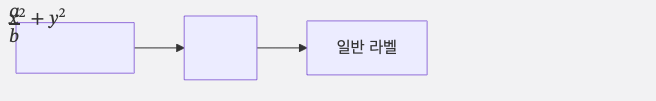
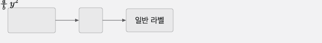
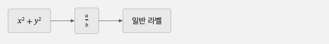
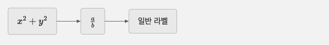
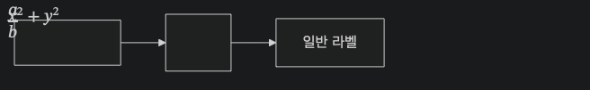
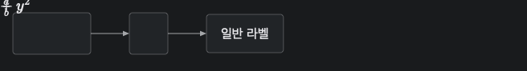
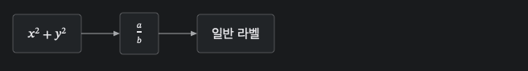
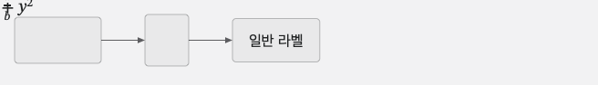
m01-inline-fraction
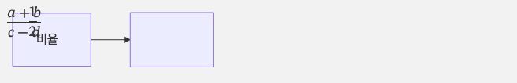
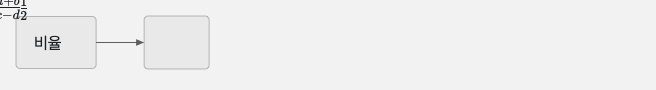
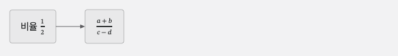
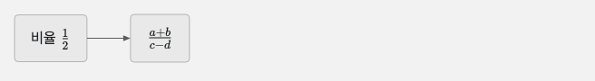
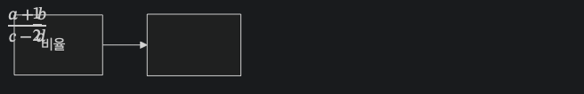
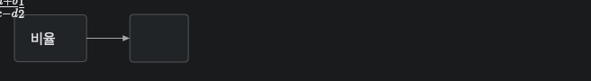
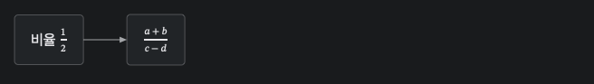
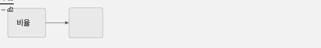
m02-sub-superscript
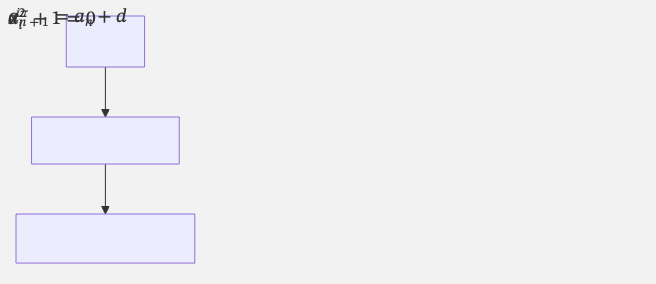
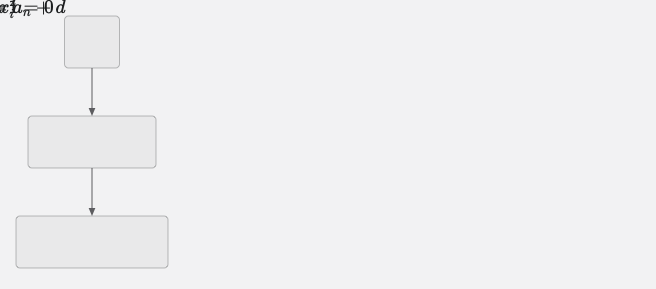
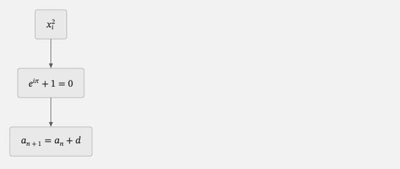
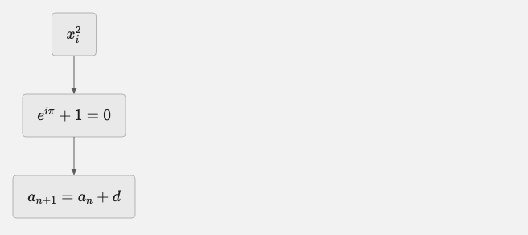
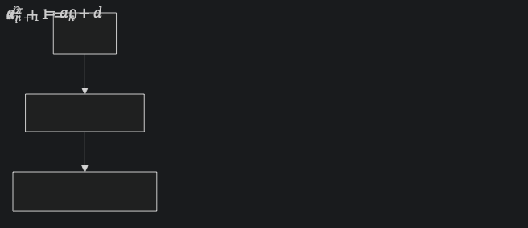
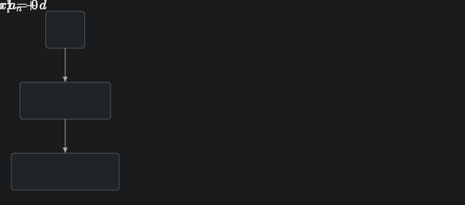
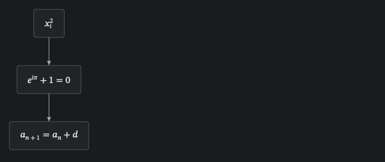
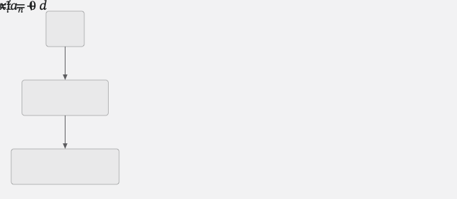
m03-text-and-math
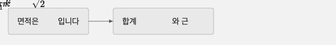
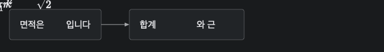
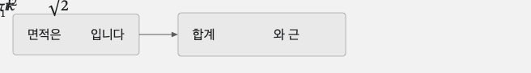
mermaid 오류: KaTeX parse error: Can't use function '$' in math mode at position 17: …sum_{k=1}^{n} k$̲$ 와 근 $$\sqrt{2…
m04-hostile-tex
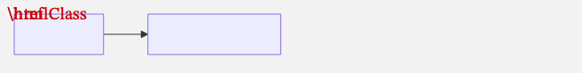
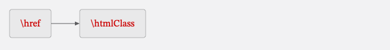
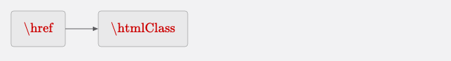
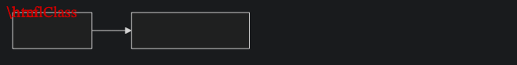
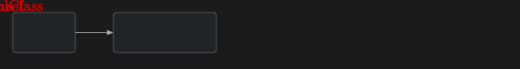
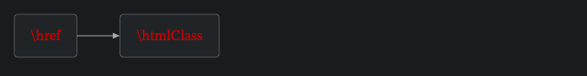
HTML 내보내기 (앱 밖, file:// 로 열기)
| 변형 | 파일 크기(B) | 다이어그램 안 표시 | fO 대비 넘침 px | 본문 수식(현행 방식 재현) | 링크 |
|---|---|---|---|---|---|
| E0-html-noKatexCss-light | 18,879 | KaTeX HTML | [-8.6,5.8,-4.2,-1.2,6396.2] | MathML 보임 · HTML 보임 | HTML · webkit · chromium |
| E0-html-noKatexCss-dark | 18,877 | KaTeX HTML | [-8.6,5.8,-4.2,-1.2,6396.2] | MathML 보임 · HTML 보임 | HTML · webkit · chromium |
| E1-html-katexCss-dataFonts-light | 386,784 | KaTeX HTML | [-0.6,-0.2,-0.3,-0.9,-0.2] | MathML 숨김 · HTML 보임 | HTML · webkit · chromium |
| E1-html-katexCss-dataFonts-dark | 386,782 | KaTeX HTML | [-0.6,-0.2,-0.3,-0.9,-0.2] | MathML 숨김 · HTML 보임 | HTML · webkit · chromium |
| E2-html-katexCss-noFonts-light | 37,600 | KaTeX HTML | [-8.1,-0.6,-1.9,-12.9,-0.2] | MathML 숨김 · HTML 보임 | HTML · webkit · chromium |
| E2-html-katexCss-noFonts-dark | 37,598 | KaTeX HTML | [-8.1,-0.6,-1.9,-12.9,-0.2] | MathML 숨김 · HTML 보임 | HTML · webkit · chromium |
| E3-mathml-noKatexCss-light | 14,348 | MathML | [-10.9,-1.8,-5.1,-11.4,-6.7] | MathML 보임 · HTML 보임 | HTML · webkit · chromium |
| E3-mathml-noKatexCss-dark | 14,346 | MathML | [-10.9,-1.8,-5.1,-11.4,-6.7] | MathML 보임 · HTML 보임 | HTML · webkit · chromium |
| E4-mathmlBare-noKatexCss-light | 14,199 | MathML | [0,0,0,0,0] | MathML 보임 · HTML 보임 | HTML · webkit · chromium |
| E4-mathmlBare-noKatexCss-dark | 14,197 | MathML | [0,0,0,0,0] | MathML 보임 · HTML 보임 | HTML · webkit · chromium |
| E5-mathmlBare-katexCss-dataFonts-light | 382,104 | MathML | [0,0,0,0,0] | MathML 숨김 · HTML 보임 | HTML · webkit · chromium |
| E5-mathmlBare-katexCss-dataFonts-dark | 382,102 | MathML | [0,0,0,0,0] | MathML 숨김 · HTML 보임 | HTML · webkit · chromium |


KaTeX CSS 23,804B, woff2 글꼴 20개 합계 259,792B(base64로 넣으면 약 4/3배). E0은 현재 내보내기와 같이 KaTeX CSS가 없다 — 근호의 KaTeX 내부 SVG가 6,396px 넘친다. 넘침 값은 .katex가 없는 mathml-bare에서는 foreignObject 자신을 재어 0으로 나오므로 의미가 없다(스크린숏으로 판단). 본문 수식은 지금 앱도 내보낸 HTML에 KaTeX CSS를 넣지 않아 MathML과 HTML이 함께 보인다(기존 동작).
DOCX PNG (exportDocx.ts:154-201과 같은 경로)
| 샘플.방식 | webkit toDataURL / toBlob | chromium | PNG |
|---|---|---|---|
| 18-math-label.html | ok / ok 8762B | ok / ok 9797B | webkit PNG chromium PNG |
| 18-math-label.mathml | ok / ok 8836B | ok / ok 9203B | webkit PNG chromium PNG |
| 18-math-label.mathml-bare | ok / ok 8470B | ok / ok 8911B | webkit PNG chromium PNG |
| 18-math-label.none | ok / ok 14668B | ok / ok 16948B | webkit PNG chromium PNG |
| 18-math-label.textsvg | ok / ok 12274B | ok / ok 14244B | webkit PNG chromium PNG |
| m03-text-and-math.html | ok / ok 10964B | ok / ok 12606B | webkit PNG chromium PNG |
| m03-text-and-math.mathml | ok / ok 13231B | ok / ok 13901B | webkit PNG chromium PNG |
| m03-text-and-math.mathml-bare | ok / ok 12808B | ok / ok 13437B | webkit PNG chromium PNG |
| m03-text-and-math.none | ok / ok 23080B | ok / ok 25346B | webkit PNG chromium PNG |
| m03-text-and-math.textsvg | ok / ok 21217B | ok / ok 22496B | webkit PNG chromium PNG |


none = 해석기 없음($$…$$ 원문), textsvg = 해석기가 TeX 원문을 <text>로 돌려줌(foreignObject 없음, 대체안 후보).
정화 허용 목록 왕복
공유 sanitizeSvg × M1 픽스처: jsdom a(이전/이후/마지막) 불일치 0/0/0 (대상 38쌍), webkit a(이전/이후/마지막) 불일치 0/0/0 (대상 38쌍), chromium a(이전/이후/마지막) 불일치 0/0/0 (대상 38쌍).
| 수식 입력(jsdom, 추정 측정) | pele-math 유지 | .katex 유지 | <math> 유지 | annotation 유지 | 인라인 style 유지 | script·on*·javascript: 속성 | 공유 sanitizeSvg가 fO 남김 |
|---|---|---|---|---|---|---|---|
| 18-math-label.html | 2/2 | 2/2 | 0/0 | 0/0 | 27/27 | false | false |
| 18-math-label.mathml | 2/2 | 2/2 | 2/2 | 2/2 | 6/6 | false | false |
| 18-math-label.mathml-bare | 2/2 | 0/0 | 2/2 | 2/2 | 6/6 | false | false |
| m01-inline-fraction.html | 2/2 | 2/2 | 0/0 | 0/0 | 25/25 | false | false |
| m01-inline-fraction.mathml | 2/2 | 2/2 | 2/2 | 2/2 | 5/5 | false | false |
| m01-inline-fraction.mathml-bare | 2/2 | 0/0 | 2/2 | 2/2 | 5/5 | false | false |
| m02-sub-superscript.html | 3/3 | 3/3 | 0/0 | 0/0 | 40/40 | false | false |
| m02-sub-superscript.mathml | 3/3 | 3/3 | 3/3 | 3/3 | 7/7 | false | false |
| m02-sub-superscript.mathml-bare | 3/3 | 0/0 | 3/3 | 3/3 | 7/7 | false | false |
| m03-text-and-math.html | 3/3 | 3/3 | 0/0 | 0/0 | 32/32 | false | false |
| m03-text-and-math.mathml | 3/3 | 3/3 | 3/3 | 3/3 | 6/6 | false | false |
| m03-text-and-math.mathml-bare | 3/3 | 0/0 | 3/3 | 3/3 | 6/6 | false | false |
| m04-hostile-tex.html | 2/2 | 2/2 | 0/0 | 0/0 | 11/11 | false | false |
| m04-hostile-tex.mathml | 2/2 | 2/2 | 2/2 | 2/2 | 5/5 | false | false |
| m04-hostile-tex.mathml-bare | 2/2 | 0/0 | 2/2 | 2/2 | 5/5 | false | false |
| 적대 입력 | 남은 표지 jsdom | webkit | chromium | webkit 출력 앞부분 |
|---|---|---|---|---|
| foreignObjectNoClass | 0 | 0 | 0 | <svg xmlns="http://www.w3.org/2000/svg"></svg> |
| foreignObjectOtherClass | 0 | 0 | 0 | <svg xmlns="http://www.w3.org/2000/svg"></svg> |
| scriptInsideMath | 0 | 0 | 0 | <svg xmlns="http://www.w3.org/2000/svg"><foreignObject class="pele-math" x="0" y="0" width="80" height="20"><div xmlns="http://www.w3.org/1999/xhtml"><span clas |
| onloadInsideMath | 0 | 0 | 0 | <svg xmlns="http://www.w3.org/2000/svg"><foreignObject class="pele-math" x="0" y="0" width="80" height="20"><div xmlns="http://www.w3.org/1999/xhtml"><span clas |
| javascriptHrefInsideMath | 0 | 0 | 0 | <svg xmlns="http://www.w3.org/2000/svg"><foreignObject class="pele-math" x="0" y="0" width="80" height="20"><div xmlns="http://www.w3.org/1999/xhtml"><span clas |
| htmlOutsideForeignObject | 0 | 0 | 0 | <svg xmlns="http://www.w3.org/2000/svg"><g></g></svg> |
| formsInsideMath | 0 | 0 | 0 | <svg xmlns="http://www.w3.org/2000/svg"><foreignObject class="pele-math" x="0" y="0" width="80" height="20"><div xmlns="http://www.w3.org/1999/xhtml"><span clas |
| annotationXmlInsideMath | 0 | 0 | 0 | <svg xmlns="http://www.w3.org/2000/svg"><foreignObject class="pele-math" x="0" y="0" width="80" height="20"><div xmlns="http://www.w3.org/1999/xhtml"><math><sem |
| dataHrefImage | 0 | 0 | 0 | <svg xmlns="http://www.w3.org/2000/svg"><image width="1" height="1"></image><image width="1" height="1"></image></svg> |
| 훅 격리 측정 | jsdom | webkit | chromium |
|---|---|---|---|
| separateInstanceHookFiredDuringSanitizeSvg | 0 | 0 | 0 |
| separateInstanceHookFiredOnOwnCall | 3 | 3 | 3 |
| freshInstanceInheritsSharedHrefHook | no (data: href kept) | no (data: href kept) | no (data: href kept) |
| sharedStripsDataHref | true | true | true |
| diagramPathStripsDataHref | true | true | true |
| diagramPathStripsExternalHref | true | true | true |
| diagramPathKeepsUseFragment | false | false | false |
| sharedKeepsUseFragment | false | false | false |
| globalHookSeenBySanitizeSvg | 43 | 43 | 43 |
| globalHookAfterRemoveHook | 43 | 43 | 43 |
| sanitizeSvgStillStripsForeignObjectAfterGlobalConfigCall | true | true | true |
globalHookSeenBySanitizeSvg는 대조 실험이다 — 같은 훅을 전역 기본 인스턴스에 걸면 sanitizeSvg 한 번에 수십 번 실행된다(누수). removeHook 뒤에는 더 늘지 않았다. <use href="#…">는 공유·다이어그램 경로 모두 지운다(use 태그 자체가 허용 목록에 없음).
CSP (앱 index.html:7과 같은 meta, 시나리오마다 새 페이지)
| 시나리오 | webkit 위반 이벤트 / 콘솔 거부 | chromium |
|---|---|---|
| load-only | 0 / 1 | 0 / 1 |
| pele-math-html-render | 0 / 1 | 0 / 1 |
| pele-math-mathml-render | 0 / 1 | 0 / 1 |
| pele-math-mathml-bare-render | 0 / 1 | 0 / 1 |
| body-katex-big-delimiter | 0 / 1 | 0 / 1 |
| mermaid-math-render | 5 / 6 | 0 / 1 |
| force-load-all-katex-fonts | 0 / 1 | 0 / 1 |
재현 명령
npx vitest run --config spike/pele/vitest.capture.config.ts spike/pele/m1b.capture.ts SPIKE_OUT=<임시 폴더> npx vite build --config spike/pele/vite.m1b.config.ts SPIKE_OUT=<임시 폴더> npx vite preview --config spike/pele/vite.m1b.config.ts # http://localhost:4318 node spike/pele/run-m1b.mjs node spike/pele/run-m1b-csp.mjs node spike/pele/run-m1b-position.mjs node spike/pele/make-report-m1b.mjs